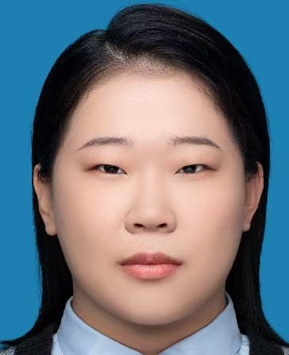

关于我

热爱生活的创作者，擅长文字表达与视觉设计，致力于用内容传递温度与思考。
在忙碌中自洽，最近在准备专业考试的同时，也在探索新的创作方向...
个人信息
| 姓名 | 信若溪 |
|---|---|
| 性别 | 女 |
| 兴趣爱好 | 阅读、摄影、旅行、插画 |
| 个人标签 | 乐观主义者、终身学习者、生活记录者 |
热爱生活的创作者，擅长文字表达与视觉设计，致力于用内容传递温度与思考。
在忙碌中自洽，最近在准备专业考试的同时，也在探索新的创作方向...
| 姓名 | 信若溪 |
|---|---|
| 性别 | 女 |
| 兴趣爱好 | 阅读、摄影、旅行、插画 |
| 个人标签 | 乐观主义者、终身学习者、生活记录者 |